About Wires
Version 1.4.1 — September 6, 2026
Wires is a documentation and planning tool for audio/video/lighting signal routing. It lets you model the technical architecture of an installation by placing devices on a canvas, connecting them with cables, and organizing those connections into logical, visual signal routes.
Who is it for?
Wires is designed for audiovisual technicians, streamers, systems integrators, sound and lighting contractors, church or event technical directors, and any professional or hobbyist involved in designing, documenting, or operating complex signal architectures.
Key Features
- Custom Devices: import an image of your device or choose a geometric shape, then add as many ports (connection points) as needed to make it interactive.
- Canvas: a workspace where you can freely position your devices.
- Cables: name your devices and connect them together, then categorize each connection.
- Signal Routes : group cables into logical routes to document the complete path of a signal, from source to destination.
- Zones: define zones on the canvas to structure the plan by scene, rack, or technical area.
- Text Labels: annotate the plan with free text to add contextual information.
- Exports: generate an interactive HTML export, a PDF, or a ready-to-use pack list.
- Multilingual Interface: available in English, French, and Spanish.
Highlights
Device Image Visualization
Each device can be represented by an image or a colored geometric shape. Import your own visuals or select a shape to make the plan immediately readable by the whole team, even without prior knowledge of the project.
Signal Animation
Start an animation on any route: a glowing dot travels along the cables from source to destination. This visualization lets you verify at a glance the complete signal path, its direction, and that the chain is unbroken.
Interactive HTML Export
The plan can be exported as a standalone HTML file that faithfully reproduces the canvas, device images, and route list. It can also be published on a web page to clearly present and explain your setup.
Use Cases
- Document the audio routing of a concert: consoles, stage boxes, amplifiers, and monitors, tracking each bus from stage to house.
- Map the video infrastructure of a broadcast studio: cameras, switchers, routers, encoders, and monitors — with an HTML export to share with the production team or client.
- Design the audiovisual setup of a church: sound reinforcement, screens, cameras, video control room, live streaming, and stage monitors.
- Organize the audiovisual setup of a content creator for YouTube, Instagram, or live streaming: cameras, microphones, lighting, computer, audio interface, screens, and network equipment.
- Design the architecture of a conference room: HDMI sources, matrices, screens, and video conferencing systems — using the animation feature to verify that each signal reaches its correct destination.
Free and PRO Versions
The free version is limited to 10 devices
A PDF export at 75 dpi.
Sub-projects are exclusive to Wires PRO.
All other features are available in both versions.
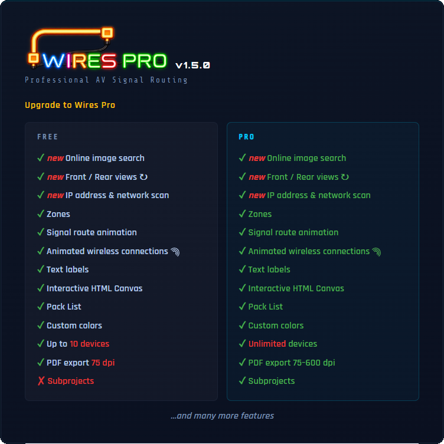
Quick Start Guide
Step 1 — Create or Open a Project
When Wires launches, a start screen lists your recent projects.
Click + New Project to create it.
Step 2 — Add Your First Device
Click the + button in the header → ⬡ New Device .
The image chooser opens:
- Three ways to do it: search for it online with , import it from your computer (PNG, JPG, WEBP, AVIF, GIF or BMP), or choose a geometric shape. The Image & Connection Points Configuration window opens — configure it (see Devices). Click ✓ Apply . The Add a Device window opens, with the image already in place: enter the name, adjust the short name and category if needed. Click Place on canvas .
Step 3 — Create a Cable to Connect Two Devices
Click the + button in the header → ⤢ New Cable . A banner appears at the top and guides you. The connection points present on the devices appear. Click a connection point on the SOURCE device, then click a connection point on the DESTINATION device (same cable type required). The cable is drawn automatically. Exceptions: USB and analog audio accept mixed connector types.
Step 4 — Create a Signal Route
A signal route traces the path of a signal through a chain of cables and animates it on the canvas. When you create a cable, a window appears:
- choose Create new route or Add to existing — see Signal Routes for full details.
ℹ A cable without a route is automatically deleted if you cancel the window.
Step 5 — Organize the View
Scroll the wheel to zoom. Left-click and drag on an empty part of the canvas to pan the view.
To draw a selection box and select multiple devices, hold Alt + click and drag.
Press F to fit all devices on the canvas.
Step 6 — Name and Save
Click the project name in the top header to rename it. When you close the program, an UNSAVED CHANGES dialog will appear. Click Save As… to choose the file location and name.
Step 7 — Change the Interface Language
Wires is available in three languages: English, French, and Spanish. Click the flag at the top to change the language at any time. The interface updates immediately. More languages will be added in future versions.
Interface Overview
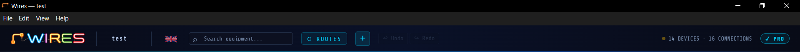
Header Bar
The header contains the project name, navigation controls, and a flag icon on the right side. Click it to change the interface language between English, French, and Spanish.
| Element | Function |
|---|---|
| Logo / WIRES | Link to www.alkoda-wires.com |
| Project name | Click to rename the project |
| Flag | Click to change language |
| Search equipment... | Search for devices on the canvas |
| ROUTES Button | Open the Signal Routes panel |
| + Button | Dropdown: ⬡ New Device , ⤢ New Cable or T New Text , ▭ New Zone . |
| ↩ Undo / ↪ Redo Buttons | Browse the edit history (10 levels) |
| N DEVICES / N CONNECTIONS | Current number of devices and cables on the canvas |
Left Sidebar
- Three filter sections, each with two modes (isolate / hide, toggled by the switch on its All row):
- Categories — isolates or hides devices of one type; in isolate mode, their connections to other categories are shown as ghosted.
- Cables — isolates or hides devices connected by the selected cable type.
- Zones — isolates or hides devices located in the selected zone.
- All three filters apply simultaneously — see Library and Categories for full details.
- The sidebar retracts automatically — hover to open it, B to pin it.
Right Information Panel :
Cable or Device
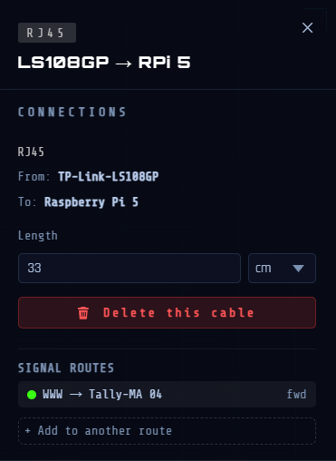
Opens automatically when you click a device or cable. Displays details, connections, and actions for the selected item. Close it with the ✕ button, Esc, or by clicking on an empty canvas.
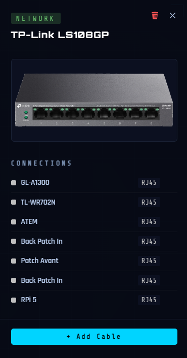
Signal Routes
Opened via the ⬡ ROUTES button in the header. Displays all signal routes created in the project: their name, the cable segments that make them up, and their flow direction. From this panel, you can start or stop the flow animation on a route, reorder segments, reverse the direction of a segment, and create alternate paths (splits). The panel can stay open while you work. A first click on the empty canvas closes the panel without stopping any running animations; a second click stops them.
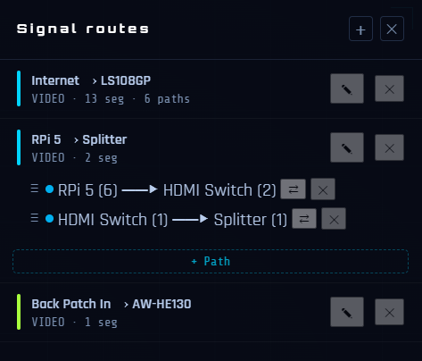
Minimap

Bottom-left corner. Shows a simplified view of the canvas. Click or drag anywhere in the minimap to navigate.
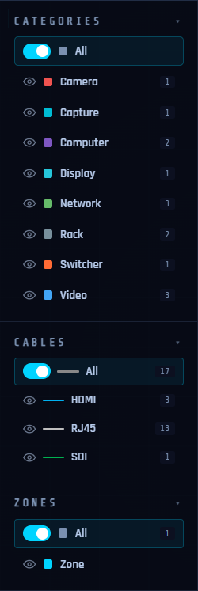
Projects
Create a New Project
- Ctrl + N or ⌘ + N (via the File menu)
- Start screen → + New Project button.
- If there is unsaved work, a dialog box asks what to do first.
Open a Project
- Ctrl + O or ⌘ + O or File → Open
- The start screen lists the 10 most recent projects (click to open)
Autosave (Crash Recovery)
Wires automatically saves a session file 3 seconds after the last change.
If the application crashes or is force-closed, the next launch shows a "● last session" entry on the start screen.
ℹ This is a crash-recovery mechanism only: it does not replace manual saving.
Import a Project
ℹ This feature is exclusive to the Wires PRO version.
- Lets you embed an existing .wires file into the current canvas as an independent block (sub-project zone). PRO feature — see Sub-projects.
Devices
Add a Device
Click the + button in the header then ⬡ New Device .
- A window opens to choose the image. Three ways to do it: search for it online, import it from your computer (PNG, JPG, WEBP, AVIF, GIF or BMP), or choose a geometric shape (rectangle, circle, triangle, square).
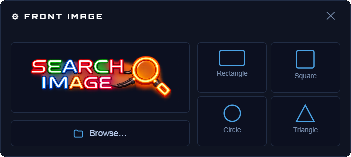
Search for a device image
- Click to open the search.
- Type the Model: the Suggestions list fills in as you type. It contains the models whose name matches, and every product of the brands whose name matches — typing “dec” brings up Kiloview’s LinkDeck as well as every Decimator Design device.
- The Brand is optional; filling it limits the suggestions to that manufacturer only.
- Click a model: its Suggested images appear on the right, with their dimensions and format.
- Click an image to select it. ⛶ Enlarge preview lets you see it larger before deciding.
- Click Choose this image to continue with it.
- If no suggestion fits, or if no image is available for the product, Search opens a browsing window. Clicking an image adds it to the product’s images, where you select it like the others. The ✓ Plain background checkbox steers that search toward images on a plain background.
- The Image Configuration window opens automatically — configure it (see below).
- Click ✓ Apply .
- The Add a Device dialog box opens, with the image and its ports already in place. If the image comes from the search, the name and short name are already filled in; they remain editable. Otherwise, fill in the name and the short name. Assign it a category.
- Click Place on canvas to place the device.
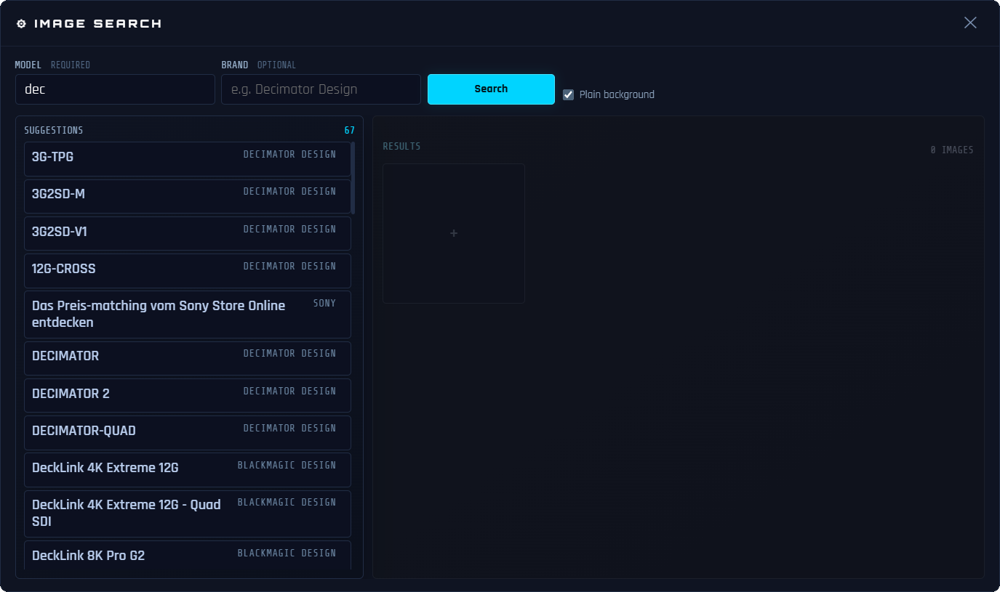
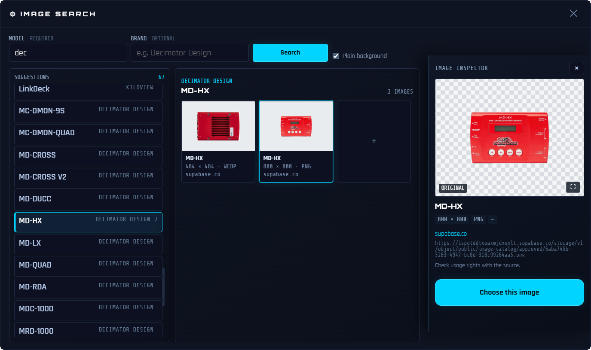
ℹ The free version is limited to 10 devices. Wires PRO removes this limit.
Image Configuration & Connection Points Window — Step by Step
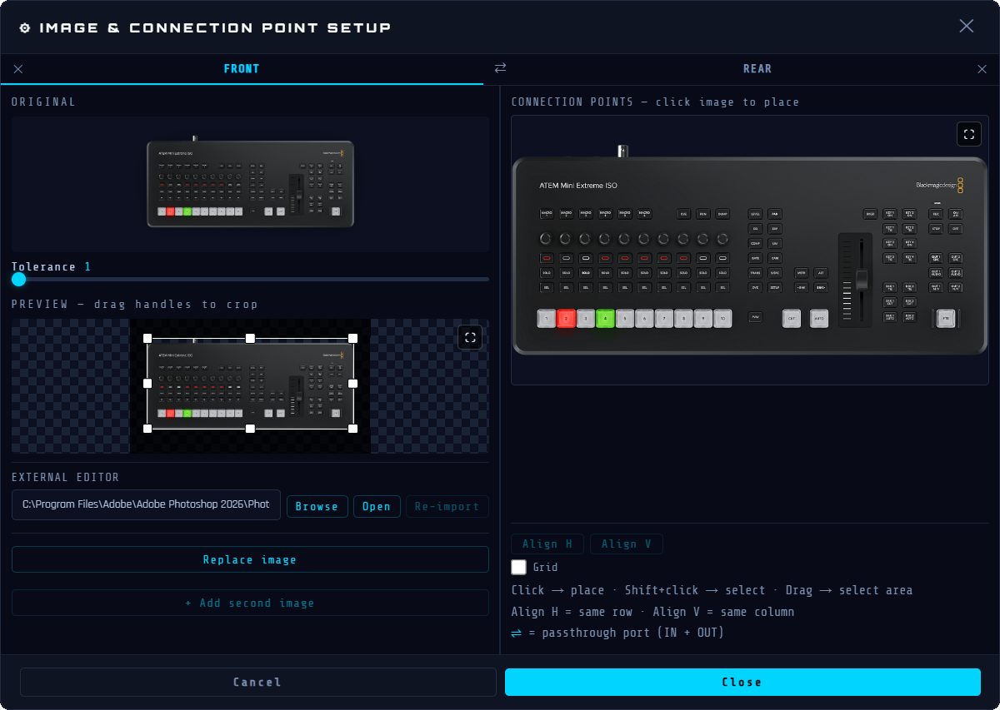
To edit the image of an existing device, see Editing a Device Image.
This window has three areas: Top Left = original image | Bottom Left = background-removed result with crop handles | Right = port editor.
ℹ With a geometric shape, steps 1 and 2 below do not apply. Skip directly to step 3.
Step 1 — Remove the Background
- Adjust the background removal with the Tolerance slider.
- If the result is not satisfactory, use the external editor: enter the path to your image editor, click Open, edit the file, then re-import it.
Step 2 — Crop the Image
- A crop rectangle automatically appears around the device.
- Drag the handles to adjust the crop area.
- Drag the center of the rectangle to move the entire crop area.
- The ⛶ button opens the preview enlarged to let you make pixel-precise adjustments.
Step 3 — Add Connection Points (Ports)

The right area shows the cropped image of the device. This is where you place the connection points that represent the physical connectors.
ℹ With a geometric shape, it is not possible to place a connection point outside the shape.
| Action | Effect |
|---|---|
| Click ⛶ | Opens the area in fullscreen, with the port list right next to it and the Align/grid buttons grouped below. |
| Click an empty area of the image | Add a connection point at that exact position. Default type: HDMI. |
| Drag over an empty area of the image | Draw a selection box to select several existing points at once. |
| ⇧ + drag | Add to the existing selection without clearing it. |
| Double-click a connection point | Highlight its row in the port list below and open the type dropdown. |
| Click and drag a connection point | Reposition the point (hold >0.2 s before moving). |
| ⇧ + click a connection point | Toggle its selection |
Step 4 — Configure Each Port in the List
Below the image, each port appears as a row in the list:
| Element | Function |
|---|---|
| Colored Square | Shows the cable type's color at a glance. |
| Number #N | Port index (1, 2, 3…), or a custom number. |
| No. Field | Port number, editable. |
| Type Dropdown | Click to choose the connector type: Dante, DC, DisplayPort, HDMI, Jack 3.5, Jack 6.35, MADI, Optical, RCA/Cinch, RJ45, SDI, SDI-F, Speakon, Thunderbolt, USB-A, USB-C, USB-DC, XLR — or Custom… to create a made-to-measure cable type. |
| ⇌ Button | Toggle bidirectional mode: the port accepts both IN and OUT connections. When active, the button turns cyan. |
| Button ✕ | Delete this port. |
ℹ Two ports sharing the same number light up red and blink (list row and point outline on the image).
Step 5 — Align the Ports (Optional)
- ⇧ + click (or ⇧ + drag) to select 2 or more port points.
- Align H to move all selected points to the same horizontal level (same Y coordinate).
- Align V to move all selected points to the same vertical column (same X coordinate).
- ↪ Useful for aligning a row of ports on a perfectly straight device image.
Step 6 — Apply
- Click ✓ Apply to confirm. The crop is applied and the ports are saved.
- The Image Configuration window closes and returns to the Add a Device dialog box.
- The device preview shows the cleaned-up image with port points overlaid.
If an image is already used by another identical device, a Number field appears. Optional, it lets you assign a number to tell the devices apart.
“Add a Device” Window
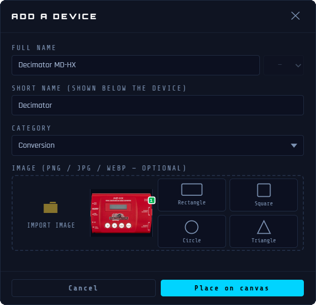
| Field | Notes |
|---|---|
| Name | Full device name: required. |
| Short Name | Short label shown on the canvas. Automatically filled from the name. Editable. |
| Category | A device arrives in the “Unsorted” category. Choose its category from the list. Select Custom… if you want to create a new category. |
| Image Area | Shows the already-chosen image — click it to reconfigure it. The import and shape buttons remain available alongside, to pick a different one. |
Editing a Device
| Action | Effect |
|---|---|
| Click the label (canvas) | Rename - type and press Enter |
| Double-click the device | Opens the image configuration to edit the image and ports |
| Drag the device | Moves the device : cables follow live |
| Drag the top-left corner | Resize proportionally |
| ⇧ + click the device | Bring to front — moves this device in front of any overlapping device. |
Changing a Device's Category
When a device is selected, its category is shown as a colored badge at the top of the right information panel (for example VIDEO, CAMERA, AUDIO). You can reassign the category directly at any time.
- Click the device on the canvas to open the right information panel.
- Click the colored category badge at the top of the panel.
- A list opens showing all available categories, each with its color dot.
- Click a category → the badge updates immediately and the device count in the left sidebar refreshes.
ℹ If the same device is present in several copies, Wires offers to move them all at once.
Selecting Multiple Devices
| Gesture | Effect |
|---|---|
| Alt + click and drag on the canvas | Draws a selection box: all devices it touches are selected |
| Ctrl + click a device | Adds or removes it from the current selection |
| ⌘ + click | |
| Click a selected device | Removes this device from the selection |
| Click the canvas | Clears the selection |
| Click and drag on the canvas | Pans the view without losing the selection |
| Delete | Deletes all selected devices (confirmation required) |
| Esc | Clears the selection |
Selected devices are highlighted with a cyan glow. The right information panel lists all selected devices. Click a row to expand it and see its connections.
The Delete this device button lets you delete this device individually from this panel.
Copy, Cut, Paste
These actions operate on the devices selected on the canvas. The selection must be active before copying or cutting. Pasting creates an independent duplicate, positioned at the center of the view.
| Shortcut | Action |
|---|---|
| Ctrl + C | Copies the selected device(s) to the clipboard |
| ⌘ + C | |
| Ctrl + X | Cuts the selected device(s) |
| ⌘ + X | |
| Ctrl + V | Pastes a duplicate at the center of the view. |
| ⌘ + V |
ℹ Cables connected to copied devices are not included in the paste — each duplicate is placed unconnected, ready to be wired.
Deleting a Device
- Select the device then press the Delete or ⟵ key
- Or: 🗑️ button in the right information panel
ℹ Cables connected to the deleted device become orphaned (one floating end). They remain visible and can be reconnected or deleted.
Internet Icon
Every project includes a built-in Internet icon — automatically added the first time it opens and present in all new projects. It can be deleted if your setup does not use an external connection, and restored at any time.
Appearance and Placement
- Globe icon (light blue), positioned by default at the bottom left of the canvas.
- Can be freely dragged to any position on the canvas.
- Disconnected (no cable connected): icon shown in grayscale with reduced opacity.
- Connected (at least one cable connected): icon shown in color.
Deletion
Select the Internet icon, then press Delete or click the button in the right information panel. A confirmation is requested: if cables are connected to it, they will be removed from the canvas and from all of their routes.
Restoration
If the Internet icon has been deleted, click the + button in the header then ⬡ New Device . In the ⚙ IMAGE window that opens, click ⟳ Restore Internet icon. The icon is placed back at the bottom left of the current view, in an empty spot.
Connection
The Internet icon represents an outward connection (network, cloud, internet). It has an RJ45 port and connects like any other device.
Cable direction matters for signal route animation — set it before connecting.
+ then ⤢ New Cable and follow the banner instructions.
Exclusions
- Does not appear in the standard device library.
- Does not appear in the left sidebar.
- Does not appear in the PDF pack list export.
ℹ The Internet icon represents an external network connection point. It is present by default in every new project, can be deleted if not needed, and restored at any time.
Editing a Device Image
Once a device is placed on the canvas, you can re-edit its image without affecting its connection points or the cables already connected to it.
Opening the Image Configuration for an Existing Device
Double-click any device on the canvas. The IMAGE & CONNECTION POINT SETUP page opens with the current image and all connection points already loaded and ready to edit.
Replacing the Image
Click Replace image to replace the current image with a new file. Background removal is applied automatically. Existing connection points stay in place — reposition them if needed.
Using an External Image Editor (Optional)
The interface includes a direct connection to any image editor installed on your machine (Photoshop®, GIMP, Affinity Photo®, etc.). The workflow has four steps.
Step 1 — Configure the Editor
In the External Editor section at the bottom left of the Image Configuration, enter the full path to your editor's executable or click Browse to locate it. This path is saved and remembered across sessions.
Step 2 — Export to the Editor
Click Open . Wires converts the current image to PNG and writes it to a temporary file, then opens it directly in your editor. The Re-import button becomes active.
Step 3 — Edit and Save
Make your edits in the external editor. Save the file (Ctrl + S or ⌘ + S). You can save and refine as many times as needed. Wires will not re-import it until you explicitly ask it to.
Step 4 — Re-import
Once you're satisfied, click Re-import in IMAGE & CONNECTION POINT SETUP. Wires reads the saved file, re-applies background removal at the current tolerance setting, and updates the preview. Connection points and cables are not affected. You can repeat steps 3 and 4 as many times as needed before clicking ✓ Apply .
Warning About Canvas Size
If you use an external editor and the image dimensions change (margins added, cropping, etc.), Wires warns you when re-importing. Click OK to continue — then manually reposition the connection points to match the new image.
Cables (Connections)
Creating a Cable
- Click the + button in the header then ⤢ New Cable (or the ⤢ New Cable button in a device's information panel)
- The banner at the top shows — click the source port point
- Then shows — click the destination port point.
ℹ Bidirectional ports (IN/OUT): when you click a dual port, a popup shows . Hover to see each option highlighted, then click your choice.
ℹ Wireless connection (WiFi  /Bluetooth
/Bluetooth  /HF
/HF  ): no cable is drawn on the canvas — only the logical link is created. A wireless port accepts an unlimited number of connections, in both directions.
): no cable is drawn on the canvas — only the logical link is created. A wireless port accepts an unlimited number of connections, in both directions.
- The cable is drawn automatically.
- A route-assignment prompt appears automatically after creation.
To cancel cable mode: press Esc or click the ✕ Cancel button in the banner.
The name is pre-filled from the connected devices, but remains editable. Choose a color and a signal type (Audio, Data, DMX, Video, Network, Power, USB, MIDI, or Custom). Click Create to confirm. The signal type can be changed at any time afterward.
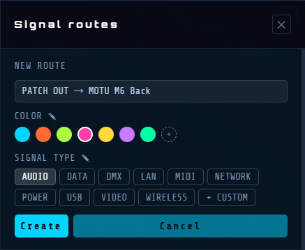
Selecting a Cable
- Click anywhere on the cable (a wide invisible hit area makes this easier). For a wireless link (no drawn path), click its symbol on the device instead.
- The right information panel shows the cable type, endpoints, and actions
Editing a Cable Path
Cables are routed automatically. You can adjust the path manually:
The first or last segment of a cable (the one directly connected to a device) can be reoriented. Right-click it, or its end handle, to open a menu with two choices: Change direction or Create a bend.
| Action | Effect |
|---|---|
| Drag a segment | Move this segment perpendicularly — adjusts the path |
| Right-click a segment near the device (or its handle) | Opens the menu: Change direction / Create a bend. |
| Arrow keys after Change direction | Change the segment's exit direction: ← → ↑ ↓ |
| Arrow keys after Create a bend | Inserts a 90° bend with the arrow keys. |
| Drag the connection point | Reconnects the end to a new port. |
ℹ All cable path adjustments are saved in the project and can be undone.
Cable Types and Colors
ℹ Only ports of the same type can be connected — except analog audio connectors (XLR, Jack 3.5, Jack 6.35, RCA/Cinch) and USB connectors (USB-A, USB-C), which are compatible with each other.
Deleting a Cable
- Select the cable then press the Delete or ⟵ key
- Or: Delete this cable button in the right information panel
Cable Visual States
| State | Appearance | Preview |
|---|---|---|
| Hovering the mouse over a cable | Wider invisible hit area, easier to click | |
| Orphaned | Dashed, semi-transparent – one end without a device | |
| Active route | Bright glow – part of an active route | |
| Grayed-out route | Nearly invisible – not part of the active route |
Text Labels
Text labels are independent annotations you can place on the canvas: zone names, descriptions, notes, or any other information that belongs on the diagram but not to a specific device.
Placing a Text Label
Click the + button in the header then T New Text .
The mouse cursor turns into a crosshair and a banner appears at the top of the canvas:
"Click on the canvas to place a Text Label".
Press Esc or ✕ Cancel in the banner to cancel the placement.
Moving a Text Label
Hover over a text label: the cursor changes to ✥. Click and drag to reposition the text label.
Editing the Text
Double-click a text label to enter edit mode. Type new text to replace the content, or click at the desired spot to edit it directly. Rich formatting is preserved: different fonts, bold, italic, and underline can coexist on different parts of the same label.
Press Esc to cancel all changes.
Click anywhere outside the box to exit.
Formatting
Select a text label to access its formatting in the right information panel:
| Control | Function |
|---|---|
| Font | Dropdown of available system fonts. In edit mode, applies only to the selected text. Shows blank when the label contains multiple fonts. |
| Size | Font size. Can also be adjusted by dragging the blue handle in the top-left corner of the label. |
| B | Bold. In edit mode, applies only to the current text selection. Lights up if any part of the selection is bold. |
| I | Italic. Same selection behavior as bold. |
| U | Underline. Same selection behavior as bold. |
| Color | Text color picker: applies to the entire label. |
| Orientation | ⟷ Horizontal (default) or ↕ Vertical |
ℹ B, I, and U are selection-sensitive in edit mode: they apply only to the selected text. If the selection spans multi-format text, the indicators light up if the format is present anywhere in the selection.
Resizing the Text Box
By default, a box wraps tightly around its content. Click ⤡ Resize in the right information panel to enter box-resizing mode:
Four edge handles appear on the box's borders.
Drag any handle to resize the box: the text reflows inside it in real time.
Click Resize again to exit the mode: the box dimensions are kept.
Click anywhere on the empty canvas to deselect and clear the resizing mode.
The ↺ Reset button restores the box to its original auto-fit size.
Deleting a Text Label
Select the text label then press the Delete or ⟵ key.
Or: click the Delete text button in the right information panel: a confirmation dialog appears.
Zones
Colored rectangular zones drawn on the canvas let you visually group and organize your devices. They are purely visual and do not affect connections or signal routing.
A selected zone shows its colored border and its label above the top edge. Four white resize handles appear at the middle of each border. The right information panel shows all the zone's properties.
ℹ Zones created during a project import have a hatched background and their own behavior. See Sub-projects.
Creating a Zone
Click the + button in the header then ▭ New Zone .
A banner appears at the top of the canvas: "Click and drag to create a Zone".
Click and drag on the canvas to draw the zone rectangle.
Release — the zone is created and selected. The right information panel opens automatically.
Press Esc or the ✕ Cancel button in the banner to cancel without creating a zone.
Selecting a Zone
A single click on the zone's body → selects the zone and opens the right information panel.
A single click on the zone's label → also selects the zone.
Click the empty canvas → deselects the zone and closes the panel.
Clicking a device while a zone is selected → deselects the zone and selects the device.
Moving a Zone
Select the zone, then click and drag its body to move it.
Devices inside the zone do not move with it: only the zone's boundaries move.
Resizing a Zone
Select the zone: four white square handles appear at the middle of each border.
Drag a handle to resize the zone in that direction.
The "Devices inside" list in the right information panel refreshes.
Zone Name
The zone name is shown as a label above the zone.
Double-click the zone's body or its label → enters name-editing mode.
Press Enter or click outside to confirm the new name.
Or: edit the Name directly in the right information panel.
Right Information Panel — Zone Properties
| Control | Function |
|---|---|
| Name | Type to rename the zone – the label on the canvas updates in real time. |
| Size | Font size of the zone name label. |
| Color | 7 color swatches — click to apply. Changes the border, fill, and label background. |
| Opacity | Slider that controls the transparency of the zone's fill. |
| Devices Inside | List of devices located inside the zone. Click a device's name to select it on the canvas. |
| Hide Zone / Show Zone | Toggles the zone's visibility without deleting it (see below). |
| Deleting a Zone via the Panel | Two options: Delete zone — deletes only the boundary; the devices remain on the canvas. Delete + all contents — deletes the zone, all the devices inside it, and their cables. |
Deleting a Zone via the Keyboard
Select the zone then press the Delete or ⟵ key (deletes only the boundary).
Hiding a Zone
When a zone is hidden, its body and border become invisible while the name label remains on the canvas (with reduced opacity):
Click Hide zone in the right information panel.
The zone's body and border disappear — only the label remains visible.
While hidden: the zone cannot be moved or resized.
All data is preserved: name, color, opacity, and device list.
Restoring a Hidden Zone
Click the zone's name label on the canvas — the right information panel opens.
Click Show zone — the zone's body and border reappear.
ℹ A hidden zone's label remains visible on the canvas so it can always be found and restored.
ℹ All zone operations can be undone: create, move, resize, rename, hide/show, delete.

Canvas Navigation
Zoom
| Control | Effect |
|---|---|
| Mouse Wheel | Zoom in/out centered on the canvas |
| "+" or "=" key | Zoom in |
| "-" key | Zoom out |
| Toggles mouse wheel zoom to cursor-centered mode (permanent) | |
| Alt + Mouse wheel | Zoom in/out centered on the cursor (temporary, for this gesture only) |
Pan: moves the view
| Control | Effect |
|---|---|
| Right-click + drag | Pan — works even over a device |
| Space + drag | |
| Left-click + drag on an empty area | Pan |
Rectangular Selection
Draw a rectangular selection to select several devices at once:
| Action | Effect |
|---|---|
| Alt + click and drag on the canvas | Draws a selection box: all devices it touches are selected |
| Ctrl + click (Device) | Adds or removes a single device from the current multi-selection |
| ⌘ + click (Device) |
Fitting the View
Press F— adjusts the zoom and view to show all devices at once.
Minimap
- Located in the bottom-left corner of the canvas
- Cyan rectangle = your current viewport
- Click or drag anywhere in the minimap to navigate instantly
Signal Routes
Routes let you document and visualize signal paths on your cabling plan. A route traces a signal (video, audio, network, etc.) through a chain of cables.
Opening the Routes Panel
Click the ⬡ ROUTES button in the header. The right information panel opens. It stays open while you work: closing it does NOT stop a running animation.
Route Structure
A route contains:
- Trunk — the main sequence of cable segments
- Paths – optional alternate or branch segments (nestable, unlimited depth). Each segment references a cable and a direction: forward (source→dest.) or reversed (dest.→source).
Paths
- Paths let you document the branches of a route: a source that distributes to multiple devices, a backup path, or any secondary route specific to your setup. Each path can contain its own sub-paths, to represent multi-level architectures. In the animation, the signal travels along the trunk and all paths simultaneously. Click a path/sub-path’s header to fold or unfold it individually (like a route), independently of its sibling paths and of the route itself.
Assigning Cables to a Route
- After creating a cable: a prompt appears automatically. Choose Create new route or Add to existing. In the selector, hover over a route name to light up its cables on the canvas. Clicking Cancel removes the cable from the canvas without assigning it to any route.
- To add an existing cable to an additional route: select the cable — its routes appear in the information panel. Click + Add to another route to open the route selector.
- By drag-and-drop in the Routes panel: drag any segment row to move it to the trunk or to another path.
Route Name
A route’s name is generated automatically from the two devices at its ends: the one where the signal starts, and the one where it ends. This name is never fixed, so it changes on its own as soon as you replace the starting or ending device. If two or more routes end up with exactly the same name this way, each one also gets a letter in parentheses — (a), (b), (c)… — to stay identifiable, without the route’s actual name being changed.
Managing Segments and Paths
You can modify the route or its segments, paths, and sub-paths so the animation follows the signal’s actual direction precisely.
- Dragging an entire route onto another route (or onto one of its paths) turns it into a new path within that route, keeping its entire structure; the original route is removed (moved, not copied).
- Dragging a path onto the body of another path turns it into that path’s sub-path. Dropping it on the top edge of a header instead reorders it as a sibling path.
- Hover over a collapsed route or path for 1 second during a drag to temporarily expand it and see its contents.
| Action | Effect |
|---|---|
| Click a path/sub-path’s header | Folds or unfolds this path/sub-path individually |
| ⇄ on the segment | Reverse this segment's signal direction. The route title updates automatically |
| ✕ on the segment | Delete this segment and its cable (confirmation requested) |
| Drag the segment row | Move it to another position, in the trunk or another path |
| + Path | Add a new branch path inside this route |
| ✕ on the path header | Delete this path and all its segments |
ℹ If the ends of two consecutive segments are not connected, a ≠ symbol appears. This can happen after reversing a cable's direction (⇄). The indicator is informational only.
Hiding a Route
in front of a route's header makes it visible on the canvas. Click it to hide the route, and it turns into : its cables disappear, along with any devices used only by this route. A cable or device shared with another route that remains visible is never hidden.
Editing a Route
- Click ✎ on a route's header to edit its color and signal type.
- Copying/Pasting a Segment. To copy a segment elsewhere in the route, including another route, right-click on it: a Copy/Paste menu appears.
Select Copy, then right-click the destination and choose Paste.
This inserts a copy of this segment there — without creating a new cable on the canvas. The same cable can then appear in multiple places in the animation.
ℹ Deleting a copy only deletes the cable if no other occurrence remains. - Deleting a Segment. Clicking ✕ on a segment deletes its cable — a cable cannot exist without a route. The affected cable is highlighted on the canvas. The confirmation dialog box shows the two devices connected by this cable. Click Delete cable to confirm, or Cancel to leave everything unchanged.
- Deleting a Route. Clicking ✕ on a route's header deletes the route and all its cables. A confirmation dialog lists the cables to be deleted. Click Delete route + cables to confirm, or Cancel to leave everything unchanged.
Animation — Signal Tracking
| Action | Effect |
|---|---|
| Double-click the panel title | Starts the animation of all routes at once; a second double-click stops them all |
| Double-click the route title | Starts the animation: a glowing dot travels along the cables |
| Double-click a segment/path/subpath | Starts the animation only for this segment/path/subpath. |
| Press Space during an animation | Pauses the animation; press again to resume. |
| Click the route name | Stop the animation |
| Click an empty canvas | Stop the animation |
| Double-click a cable on the canvas | Toggle the animation for all routes containing this cable |
ℹ The route header turns yellow while the animation is running.
ℹ For a wireless link, a wave (3 arcs, like the WiFi symbol) travels along the line between the two devices to show the signal moving, while their ports blink alternately.
Route Visual States
| State | Appearance | Preview |
|---|---|---|
| Inactive | Panel: normal header / Canvas: normal cables | 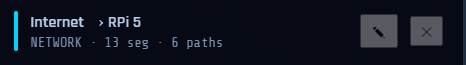 |
| Active (running) | Panel: yellow header + golden left border / Canvas: glowing cables, others grayed out | 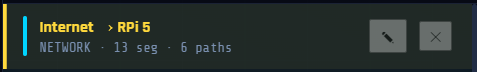 |
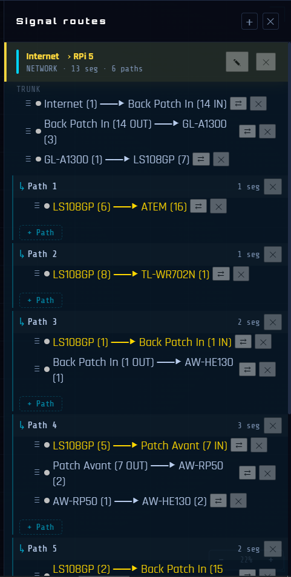
Library and Categories
Left Sidebar Filters
The left sidebar has three collapsible sections: Categories, Cables, and Zones. Click its name to collapse or expand it. The switch on the All row chooses the section's mode: isolate (only opened items are shown) or hide (only closed items disappear). The eye next to each item shows and toggles its actual visibility in the current mode. The sidebar opens when you hover over the left strip and closes automatically when you move away. Press B to keep it open permanently. Press again to return to automatic mode.
Categories Section
- Shows only categories that have at least one device on the canvas.
- Isolate mode: shows its devices at full opacity; their ghost devices (connected by a cable) appear at reduced opacity.
- Hide mode: of a category hides its devices, as well as the cables connecting them to a device that remains visible; no ghost nuance in this mode.
Cables Section
- Shows only the cable types currently used on the canvas.
- Isolate mode: shows its cables and the devices they connect; everything else stays hidden. No ghost nuance.
- Hide mode: of a type hides only its cables; the devices involved remain shown normally.
Zones Section
- Shows all named zones defined in the project.
- Isolate mode: shows devices whose center is inside; their cables toward the outside remain visible as ghosted; text labels always stay visible.
- Hide mode: of a zone hides devices whose center is inside, as well as their cables to a device that remains visible elsewhere.
Combining Filters and Other Behaviors
- Category + Cable combined: primaries = devices in the selected category that have a cable of the selected type; ghosts = other categories connected to a primary via that cable type.
- Selecting a device respects active filters: an item already hidden by a filter stays hidden even if it's connected to the selected device.
- Search bar: filter devices on the canvas by name. Click a result to select and center it.
Default Categories
Power
Audio
Camera
Capture
Conversion
Display
External
Custom
USB Hub
Switcher
Computer
Rack
Network
Storage
Video
Unsorted
ℹ Custom categories can be created when adding a device — select Custom... in the category dropdown.
ℹ Unsorted is the category selected by default when adding a device. It cannot be deleted.
Default Cables
Dante
DC
DisplayPort
HDMI
Jack 3.5
Jack 6.35
MADI
Optical
RCA/Cinch
Custom… RJ45
SDI
SDI-F
Speakon
Thunderbolt
USB-A
USB-C
USB-DC
XLR
Device Library
Your library is personal and persists across projects. Devices added with ⬡ New Device are saved to your library and available in future projects.
Renaming a Custom Category
Double-click its name in the left sidebar → edit the name → confirm.
Deleting a Custom Category
Double-click its name in the left sidebar → click ✕.
⚠ All devices in this category will be permanently deleted.
Adding a Custom Cable Type
When configuring a device's ports → Type dropdown → select Custom… at the bottom of the list. Enter the name of the new type → confirm. The new type is immediately available and appears in the Cables section of the left sidebar.
Renaming a Custom Cable Type
Double-click its name in the left sidebar → edit the name → confirm.
Deleting a Custom Cable Type
Double-click its name in the left sidebar → click ✕.
⚠ All cables of this type will be permanently deleted.
Color Editing
The Color Editing page lets you customize the colors of categories, cable types, and zones in the current project. Changes apply in real time on the canvas.
Opening the Page
Menu → Edit → Colors…
Three Columns
The page is divided into three columns: Categories, Cables, and Zones.
Click a row to open its color picker. Click again to close it.
Categories Column
Lists all categories present in the project.
Color Picker:
- 10 preset hues
- Color wheel for a custom value
The color applies immediately.
Cables Column
Lists all cable types — native and custom.
Line Style
Lists all line styles: Solid, Dashes, or Long dashes.
The color and style apply immediately to all cables of that type on the canvas.
Zones Column
Lists all named zones in the current project.
The picker has two tabs:
| Tab | What It Changes |
|---|---|
| Interior | The zone’s fill color. |
| Border | The border’s color and line style. |
The line style (Solid, Dashes, Long dashes) is only available on the Border tab.
ℹ If the project contains no zones, the Zones column shows an empty message. Create a zone first (see Zones).
Closing the Page
| Button | Effect |
|---|---|
| Apply | Closes the window and keeps all changes. |
| Cancel | Closes the window and reverts all changes made since it was opened. |
ℹ Each color change can be individually undone via Ctrl + Z or ⌘ + Z.
Sub-projects
ℹ This feature is exclusive to the Wires PRO version.
A sub-project lets you import the content of an existing .wires file into the current project. The devices, cables, signal routes, and zones from the imported file are placed on the current canvas as an independent block, framed by a colored zone bearing the source project’s name.
Importing a Sub-project
File Menu → Import project…
A dialog box opens: select the .wires file to import. A dashed preview appears under the cursor, showing the footprint of the imported content.
Move the cursor. The preview turns red if the location overlaps existing devices — move it until it turns blue again. Click to place
If no free space is visible, move the cursor near an edge of the window: the canvas scrolls automatically and slows down once a valid location is found. Press Esc or click the ✕ Cancel button in the banner to cancel the import.
What Gets Imported
- Devices (excluding the Internet icon)
- Cables internal to the imported project
- Signal routes
- Zones
Sub-project Zone
A blue bounding zone is automatically created around the imported content, named after the source project’s title. Select this zone to access the actions in the right information panel:
Detach (keep content) — the zone is deleted, the content remains on the canvas as regular items.
Remove + all content — removes the zone and everything it contains.

Keyboard Shortcuts
General
| Shortcut | Action |
|---|---|
| Ctrl + N | New project |
| ⌘ + N | |
| Ctrl + O | Open file |
| ⌘ + O | |
| Ctrl + S | Save |
| ⌘ + S | |
| Ctrl + ⇧ + S | Save As |
| ⌘ + ⇧ + S | |
| Ctrl + Z | Undo |
| ⌘ + Z | |
| Ctrl + ⇧ + Z | Redo |
| ⌘ + ⇧ + Z | |
| Ctrl + Y | Redo (alternate) |
| ⌘ + Y | |
| Ctrl + E | Export… |
| ⌘ + E | |
| Esc | Exit cable mode / close modal / deselect all |
| B | Toggle the left sidebar |
Selection and Editing
| Shortcut | Action |
|---|---|
| Delete or ⟵ | Delete the selected item (device, cable, text, or zone) |
| ⇧ + click (near the end point) | Select a cable's truncated endpoint |
| ↑ ↓ ← → (segment selected) | Change the segment's exit direction |
| Ctrl + C / Ctrl + X / Ctrl + V | Copy / Cut / Paste |
| ⌘ + C / ⌘ + X / ⌘ + V | |
| Ctrl + click | Add/remove a device from the selection |
| ⌘ + click |
Canvas Navigation
| Shortcut | Action |
|---|---|
| F | Fit all devices in view |
| F11 | Fullscreen |
| + or = / - | Zoom in / Zoom out |
| Alt + click and drag on the canvas | Draw a selection box |
| Right-click + drag | Pan — works even over a device |
| Space + drag | |
| Alt + Mouse wheel | Zoom in/out centered on the cursor (temporary, for this gesture only) |
Exporting
Wires lets you export your plan in several formats, each suited to a different use: interactive sharing, printing, a material list, or documenting a specific signal route.
Ctrl + E or ⌘ + E or File → Export… opens a single window organized into 4 tabs: Interactive HTML Canvas, PDF Canvas, Pack List, and Routes.
Each tab gives access to a different export format, with its own settings. The window stays open after an export: you can chain several exports or adjust settings without having to reopen it.
Interactive HTML Canvas
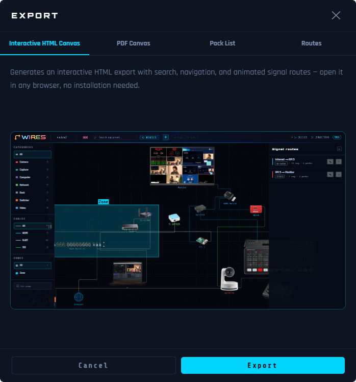
Generates a self-contained, interactive HTML file to open in any browser: search, navigation, and signal route animation, exactly like in Wires.
Usage
- Click directly on Export and choose the destination folder and file name.
- The result is a .zip file containing an .html file and an assets/ folder with the device images.
- The .html file and its accompanying assets/ folder must stay together and be uploaded to the same location. You can also view it locally after extracting the zip, or send it directly as its .zip version.
Use Cases — Sharing, Embedding, Presenting
The HTML viewer is the ideal delivery format when Wires cannot be installed on the recipient’s machine:
- Website or intranet embedding: copy the .html file to your web server or intranet. Visitors browse the complete interactive plan in any browser, click devices and cables for more detail, and watch signal routes animate, with no software to install.
- Team or client sharing: send the file by email or file transfer. The recipient opens it in their browser and gets a fully navigable live copy of your plan. Far more informative than a flat PDF.
- Live presentation: open the HTML file on a projector or shared screen. Click each device to show its specs, double-click a cable to animate the route, and guide stakeholders interactively through the entire signal chain.
Interactive Features in the Viewer
The viewer preserves the full interactive experience of Wires. Every element is clickable and fully explorable:
| Action | Effect in the Viewer |
|---|---|
| Click a device | Opens the right information panel for the device: name, category, and complete list of cables connected to it. |
| Click a cable | Opens the right information panel for the cable: signal type, source device, destination device. If the cable belongs to one or more signal routes, route chips appear: click a chip to open the Routes panel and start that route’s animation. |
| Double-click a cable | Toggles the animated signal flow for all routes using this cable. A glowing particle travels along the cable’s path from source to destination. Double-click again to stop. |
| Click an empty canvas | Stops any running animation and restores all cables and devices to their normal appearance. |
| Routes Panel | Click the ⬡ ROUTES button (top bar) to open the panel. Double-click a route’s title to start the animation. Click the title once to stop it. |
| Zoom | Mouse wheel: zooms in and out centered on the canvas. Range: 0.15× to 4×. |
| Zoom centering | Click the button to toggle mouse wheel zoom to cursor-centered mode (permanent). |
| Alt + Mouse wheel | Zoom in/out centered on the cursor (temporary, for this gesture only). |
| Pan | Left-click + drag on an empty canvas. Middle-click + drag also works. |
| Categories / Cables / Zones Filters | Left sidebar — same isolate/hide filters as when the file was created (see Library and Categories). |
ℹ The viewer is read-only. All interactive navigation and animation features work exactly as in Wires, but the plan cannot be edited: no device can be moved, created, or deleted.
PDF Canvas
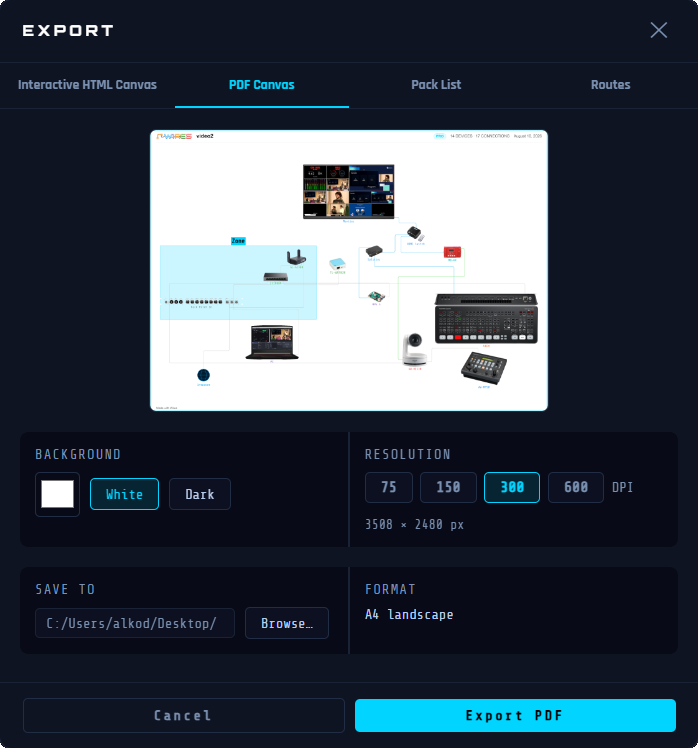
Generates a landscape A4 PDF reproducing the entire canvas: devices, cables, labels, and zones as displayed.
Usage
- Choose the Background: White , Dark , or a custom color.
- Choose the Resolution: 75, 150, 300, or 600 DPI.
- A zoomable, draggable preview reflects the result live.
- Click Export and select where you want to save your file.
- The PDF opens automatically after saving.
ℹ The export resolution can be selected before saving: 75 dpi is available in all versions. Higher resolutions (150, 300, and 600 dpi) are reserved for Wires PRO.
Pack List
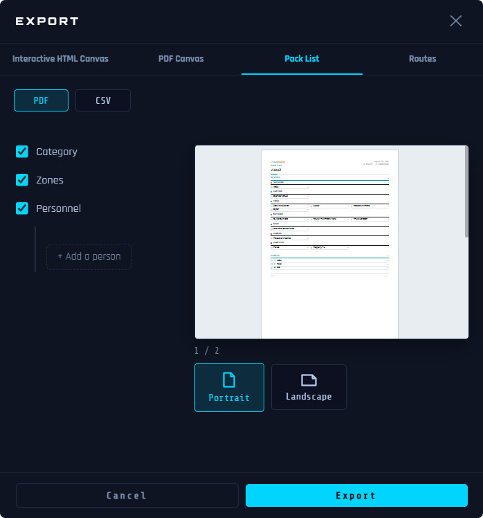
Generates the complete list of the project's devices and cables, in PDF or CSV.
Usage
- Choose the format: PDF or CSV , at the top of the tab.
- Category: groups devices by category.
- Zones: adds a separate section per zone after the main list — the main list itself is not filtered.
- Personnel: shows responsible people next to the relevant items.
- Button + Add a person : give them a name, then choose whether they are responsible for devices, a category, or a zone.
- Portrait or Landscape.
- A thumbnail preview (PDF format) reflects the result live — click it to open it full screen.
- In CSV, the exported columns are: Zone, Category, Type, Name, Quantity, Length, Responsible.
- Click Export and select where you want to save your file.
- The file opens automatically after saving.
ℹ The Internet icon is excluded from the pack list. The □ checkboxes are meant to be used on a printed copy.
Routes
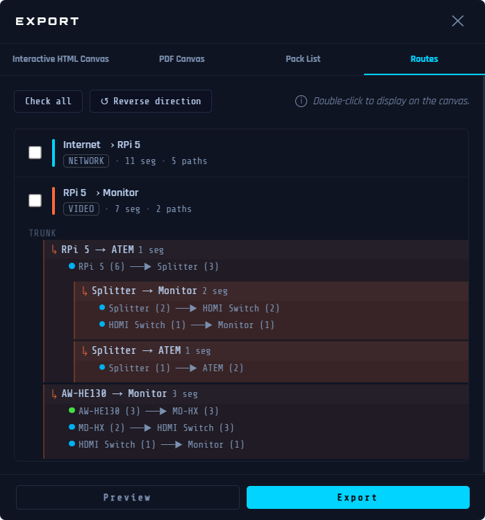
Exports one or more selected signal routes as a document: detailed route text alongside a diagram.
Usage
- Check one or more routes in the list.
- Double-click a route, a path, or a cable to highlight it directly on the canvas.
- Source → Destination : reverses the signal direction for Destination → Source .
- Preview opens the document in a separate window to check before exporting.
- Click Export and select where you want to save your file.
- The PDF opens automatically after saving.
Professional AV Signal Routing
© 2026 Alkoda. All rights reserved.